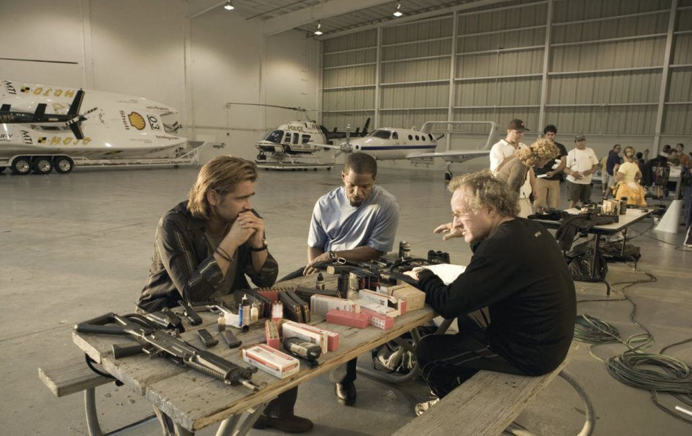
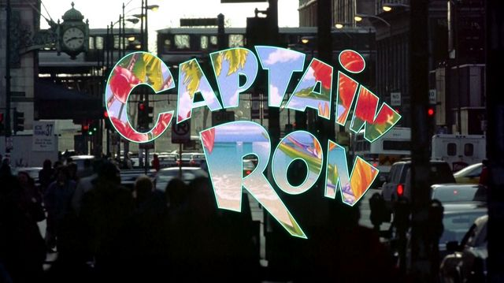
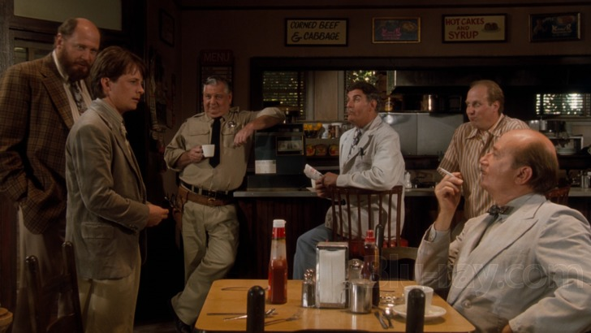
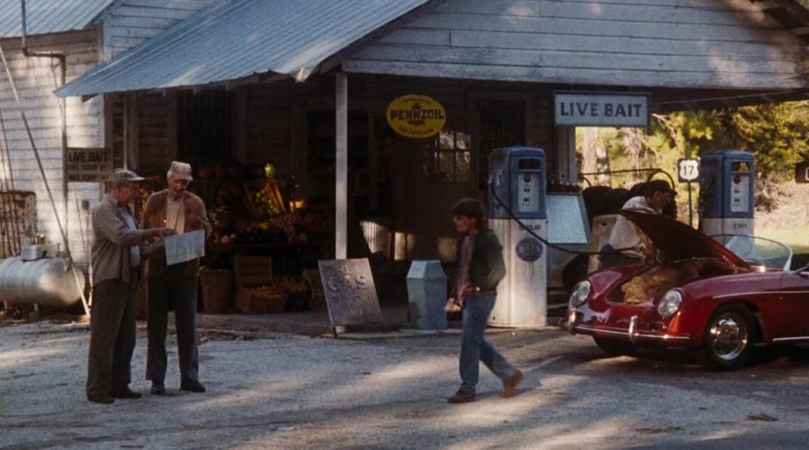

Or, some history on how my knowledge about affirmation prayer campaigns developed and evolved over the years. With intentional omission of the the primary drivers – my MAJ involvement, and the need to maintain my sanity. This write-up provides some insight in to how they work, and involves a span of time going back four decades.
Here are just some stores about some of my experiences in conducting prayer affirmations campaigns. They are in no particular order, and have no other ranking aside from their personal illustrations. I think that I have learned lessons from them, and I have applied what I have learned to all my subsequent affirmation campaigns. I think that if I were to relate my stores, you too (dear reader) might learn a thing or two that you can use to put your efforts and your own affirmation campaigns into better focus.
We will begin with a campaign that I had almost completely forgotten about. As it was initiated a decade or more ago, and it was something that I did WHILE I was still within MAJestic. (Performing prayer and affirmations campaigns during my operational years greatly assisted in me keeping my sanity, and being able to have and hold some degree of control over my life.)
So let’s begin with…
Big house, one the beach, with a wine cellar.
Yup. That’s exactly what I asked for. I did so way back in the late 1980’s to middle 1990’s. And since it didn’t materialize within a few years, I thought that it would never materialize.
I was wrong.
It materialized in 2017.
And it was exactly as I specified. It was huge. I mean HUGE (by Chinese standards), perhaps six times larger than the typical middle class household, with an enormous yard (porch). Yes, it overlooked the ocean. Yes, it was roomy and airy, and the walls were white and off yellow-white exactly as I specified (back in the day). And, yes, it even had a wine cellar! In a land where cellars are a rarity, let alone a wine cellar, this one had it, and it too was enormous!
And I loved it when I got it, and I loved the location. I loved how the air moved about the house, the cool and calm location, and my neighbors.
But…
A number of things happened. (And that is life don’t you know.) Nothing bad, or good. Just “neutral”.
First off, let’s confront the “elephant in the room”…
Why did it take 20 to 30 years for this affirmation to manifest?
Best I can figure out is that my goals were way, way outside of my abilities and my lifestyle track. You can ask, wish and dream for all sorts of things, but if your current lifestyle cannot not support them, then you would have to go through some changes to get to that state, and at that time, I was happy with my life. I asked for all sorts of things, on the condition that my life would not change. WTF? Yes, you read that correct. To make and achieve your desires you will need to go through changes, and changes are always never comfortable. So what you need to do is come up with a staged set of affirmation objectives to get to that point. In my life, I had to... [1] Change my relationships. [2] Move to the coast. [3] Change my occupation. [4] Change my attitude about life. An only once I had achieved these interim stages were my base line desires and objectives able to materialize. This is true. Don't think that you are going to suddenly have a "lifestyle of the rich and famous" without moving out of your mobile home first.
And then,
Why aren’t I living in this house now?
This is what is funny about life. You think you want one thing, and when you get it, you discover that there are other things that you do not like, or that does not appeal to you. For me, when I made the affirmation, I was living in and around Boston. It was a beautiful area, most certainly, but a ride to the beach was a two to three hour drive, and thus I could only go to it on the weekends, and for all practical purposes limited my beach excursions to maybe four times or so a year. Truthfully, a beach-side home in Massachusetts, even the cheapest and most remote run down broken homes would have run me millions of dollars. It was way, way beyond my means at that time. (And true, it still is. Which is why I don't own a beach-side home in Massachusetts.) Now, once you get a beach-side home you learn a few things about home ownership on a beach. Things, I dare say, that I was unaware of at that time. Everything gets wet. Everything. Condensate collects on the walls. Art, paintings and pictures, warp and get ruined. Clothes never fully dry. Door knobs get sticky with clammy residue, and winter down jackets and clothing starts to deteriorate when stored in plastic bags. Screws rust. Mattresses get cold and clammy. Even on sunny warm days. Fog isn't just something that is outside, it is something that you find in the hallway and closets. Tools all rust out. And sand gets into everything. And while I did enjoy my time in that house, after a while I decided that some place close to the ocean, but not on the beach was more desirable for me, and my family, personally.
So let’s look a little deeper into the drivers behind our desires, and what we want.
It wasn’t what I thought it was.
This is a theme that will come up time and time again when your dreams and wishes manifest. You have one image, one vision of what you want, and when it happens it just isn't the "same thing". Even though it might look and feel just absolutely identical to what you desired. Somehow I absolutely pictured a cross between the images of Miami Vice, the homes in Cape Cod, and a Hodge-podge of "homes of the wealthy" on television and movies. If you were to quiz me back in 1998, what I wanted, you might see one of those Miami Beach-front homes that resemble a LA mansion overlooking a long stretch of white sand under a blue - blue sky.
Do not laugh.
The television show Miami Vice defined American culture in the 1980’s and 1990’s.
Miami Vice. No television series represented the style or dominant cultural aesthetic of the 1980s as fully or indelibly as Miami Vice. A popular one-hour police drama that aired on NBC from 1984 to 1989, Miami Vice was in one sense a conventional buddy-cop show—not unlike Dragnet, Adam 12, and Starsky and Hutch —featuring an interracial pair of narcotics detectives who wage a weekly ... -Miami Vice | Encyclopedia.com
Now, you all might think that I was crazy for wanting such a thing. I was doing fine. I had a nice home, cabin, in a small town outside of a state forest in Massachusetts, and it was cozy, nice and I loved Massachusetts. And that's the way it is. When you are bombarded with culture and contemporaneous television and movies, you start to see other things, and they are always portrayed in such a way that you can relate to the characters in those flicks. You end up saying "hey! I'm just as good as that guy. Why can't I live that kind of lifestyle, like him?"
Well?
Isn’t that the way it is?
Like all those Instragram Influencers that everyone is jealous of?
What we think we want, and what we actually (deep down inside) want is often polluted by the media, culture, society and popular culture. It shapes our thoughts. That's a DANGER. For me, I was heavily influenced by the Miami Vice television show of the 1980's. As well as most of America. This influenced what I believed that I could be, aspire to, and what kind of lifestyle that I felt was deserving for me and my family at that time. Instead of saving money, building a family like what was depicted in television shows of the 1960's... Leave it to Beaver The Brady Bunch The Andy Griffith Show My Three Sons. Bewitched The Dick Van Dyke Show Mayberry R.F.D A new kind of narrative took hold. It was one of bright blue skies, fast and expensive cars. Beach houses, attractive girls in bikinis and live fast. It's a narrative where you could like a billionaire while you were still in your 20's. After all, how did some detectives (Miami Vice) get to drive around in a Ferrari?
Anyways, you become what your environment influences you to be….
The 1980s were called the Reagan years, because he was president for eight of them. During his first term, the recession ended. Inflation was controlled. He reduced taxes. Americans felt hopeful that they could make money again.
Observers created several expressions to describe some groups of people at that time. One expression was “the ‘me’ generation”. This described Americans who were only concerned about themselves. Another expression was “yuppie”. It meant “young urban professional”. Both these groups seemed as if they lived just to make and spend money, money, and more money.
Entertainment in the 1980s showed the interest society placed on financial success. The characters in a number of television programs, for example, lived in costly homes, wore costly clothes, and drove costly automobiles. They were not at all like average Americans. They lived lives that required huge amounts of money.
Two of these television programs became extremely popular in the United States and in other countries. They were called “Dallas” and “Dynasty”.
At the movie theater, a very popular film was called “Wall Street”. It was about a young, wealthy, dishonest — powerful — man who traded on the New York Stock Exchange. Power was a popular program idea in action films, too.
And what did this all get me?
Yes…
It got me a corporate life that pretty much fit that image plastered and burned into the skull of just about everyone in the United States.

It’s not just work.
It’s everything.
You see, our brains take what we see and watch and change our reality to fit those images. And this can be anything from a desire for a certain kind of house, to a way of dress, and an office space. But it can be anything. Like food for instance…
Other examples of reality deviance from expectation
This next example is a perfect example of how what you wish for might not match what you ask for.
Ah, we all like fine delicious food. And when we think of the wonderful food we have images of our “comfort” foods. Those foods that we grew up with, and that which gave us pleasure and enjoyment. For me, growing up in Western Pennsylvania, these images have always been of pizza, hamburgers, fine Polish – Italian food. Hot crusty buttered rolls.
And of course, being who I am, I wanted MORE!
- More is better, right?
- Bigger is better? Eh?
- Lots is better than a few? Eh?
A few years back I added a simple line statement affirmation to my affirmation lists. I have kept this statement in over the years and I have watched it affect my life. The statement is very simple, but…
But…
… the results were unexpected.
Unexpected.
The statement is…
I eat fine, delicious and healthy food all the time.
Oh, what a change that it has made in my life. I am not at all kidding. It really changed my life. And since I added this statement the number of hamburgers that I would eat, the plates of spaghetti, and the other types of deep fired American food just about “dropped off the cliff” to a point where I rarely eat those items at all any longer.
What!
Is that what I wanted?
No. No. No.
Something else materialized, instead.
Instead, I find myself eating delicious Thai and Hunan food, with imported wine and beer. If I eat Western and American food, instead of it been greasy or fatty deep fried delicious goodness, it’s mostly steaks and fresh sea food.
Fine. Delicious. Healthy. Food.
I said it.
It materialized.
Now, I will tell you, the reader, that I was NOT expecting this. Actually, I was expecting a nice run of delicious think subway sandwiches, large platters of delicious mac and cheese with tons of gooey cheese, and deep pan pizza. But that is not what happened. instead, I now find myself eating a higher quality of tasty food with enormous quantities of delicious vegetables, top and choice cuts of meat, and very little in the way of fats.
Funny how things work. Eh?
Remember… what your eyes see, what your thoughts create, and what those around you think about… becomes what you will experience.
Deviance is obvious when it involves material objects
The difference between what you ask for, and what you actually get is obvious when your affirmation revolves around material objects. This can be a car, a home, a location, a boat…
Here we look at how thoughts change your reality and generate new ones. And it's any thoughts, and any passions. Not just those associated with prayer campaigns.
This one is seemingly about boats. Ships. Sailing.
Seemingly.
When I lived in Indiana, I had this dream about sailing to the South Pacific and exploring the islands there. At that time in my life, I worked in the “corporate world” and it was every bit as real as the movie “Office Space”. It was the same. The same bland colors, the same irritating people, the same grayness.
And like “Joe”, in the movie “Joe vs the Volcano”, I longed to escape it.
Ah, but sailing…
Now that was an adventure.
So, I read a ton load of books, on the subject and subscribed to all sorts of magazines related to sailing and the cruising lifestyle. And many a cold frosty day stuck in the icy sub-arctic weather of a horrific Indiana winter was spent thinking, reading, day dreaming and planning of traveling all over the world in a boat.
No. I did not devise an affirmation campaign to manifest this desire.
But I thought about it all the time. I talked about it all the time. It was not just my hobby at that time, it was my obsession.
Now, thoughts create your reality.
Right?
Thoughts create your reality. Whether they are planned and formalized as in a prayer campaign, or just seemingly “random” as in a passion or an obsession.
And while I argue that you need to utilize formal affirmation prayer campaigns to focus your desires into a materialization of your desires in the reality, you can use many other techniques to make this happen. Often, you aren’t aware that you are manifesting and creating such realities.
Now, all this focus and all these thoughts had created various manifestations.
I ended up meeting people who were building and constructing their very own ocean-sailing yachts. yes! In rural Indiana of all places. They would be building these large metal vessels in their back yards, in barns and on flatbed trucks. Each time I met them, I felt closer to my dream, and felt that I could live a more rewarding life than what I was on track for…
…the clutching for the almighty dollar.
It was great seeing other people who were working on their “escape plan”. Many of them had formulated their dreams and desires over the years and had spent decades building their vessels from which they could change their lives and go onto adventures with.
So, naturally, something happened.
I bought a boat.
No, not an ocean sailing yacht. I was in Indiana, for goodness sakes! But I bought a power boat for the local lakes in Indiana. It was a 18 foot ski-boat, and it was beautiful. We (my wife and I) named it “Going Coconuts”, and we kept it at a large lake about an hour drive North of where we lived in Kokomo, Indiana.
And even though it was a small ski boat, it taught us things about the boating lifestyle that we were not thinking about all the times we read, and lived the dream of sailing. All sorts of things. And things that we were unaware of while we were sitting and reading those fine glossy magazines on sailing.
- Boats require licensing just like cars do.
- They require loan payments as well.
- And insurance.
- And you only get to ride in them a few precious times of the year…
- But you need to store them somewhere, and that costs money.
- They need more care and maintenance than a car requires.
- And they are a lot of work to keep clean.
Somehow, all those articles kind of glossed over these points. And while they talked about doing this repair, and paying that cost, We were unprepared for the shear magnitude of time, effort and cost to maintain the boat. It was almost like a big hole that you ended up throwing your money into.
"A boat is a hole in the water into which you pour money” is a popular saying that has been printed on gift items, such as T-shirts and posters. “A yacht, they say, is a hole in the water surrounded by wood into which money is poured” has been cited in print since at least 1961 and is of unknown authorship. -The Big Apple: “A boat is a hole in the water into which ...
After buying the boat, I was beginning to think that my thoughts and dreams were misplaced. That perhaps I was yearning for something that the purchase of THINGS cannot repair…
And then… came a movie.
Captain Ron

Caroline Harvey: Captain Ron, I was wondering. Are we going to be going to any more "human" type places? Captain Ron: Well, you heard of St. Croix? Caroline Harvey: Yeah. Captain Ron: We're going to the island just to the left of it. Caroline Harvey: What's it called? Captain Ron: Ted's.
Let’s talk about the movie “Captain Ron”. You see at that time, in my life, I yearned for a life that was more adventuresome and exciting than living the “Office Space” existence that I had at Delco Electronics.
Delco Electronics designed and developed automobile electronics, computers and systems for GM. It was an enormous facility that was the absolute clone of the horror of (the movie) "Office Space". It had the worst aspects of the enormous General Motors culture in the nightmarish existence of Silicon Valley smack dab in the middle of the flat corn belt of Indiana.
And then the movie “Captain Ron” appeared.
This is wonderful movie, and one of my favorite movies of all time!
A family inherits a sailboat and decides to flee the urban rat race. They don’t realize that they will have to over come many hurdles, including aspects of them selves, Capt. Ron, the boat and the environment. It’s a movie about adventure, change, and a reappraisal of your values and why your work so hard for what you think is important to you.
Captain Ron Rico is about as laid back as laid back can be.
[as Ben, who's 12, moves Captain Ron's beer] Captain Ron: Hey. Get your hands off that. Benjamin Harvey: I was just moving it. I wasn't gonna drink it. Captain Ron: You bet your little booty, you wasn't. You want a beer, you get your own beer. -- Captain Ron
He’s an ex Navy carrier driver whose been through one too many squalls, not to mention a stint in rehab.
A treasure chest of worldly knowledge, he’s never at a loss to relate his exploits even when it comes to his glass eye, “Won it in a crap game a few years back.”
Yah.
[Lost in a heavy storm] Captain Ron: The boss is right. We should be okay. 'Cause I know we're near land. Martin Harvey: Great, Cap. Great. Ya hear that? We're almost there. Explain to the kids how you know that, Captain Ron. Someone translate for General Armando. Captain Ron: Alright, now stay with me: When we left, we had just enough fuel to make it to San Juan. And now... we are out of fuel!
At first glance he’s a man you wouldn’t trust to float an inner tube, but as he proves to Martin Short throughout the course of the movie, he’s “far more cunning than first suspected.” After all, you gotta love a guy who as he’s sipping beer with Short’s young son, he tells the young lad that he just caught his parents “Playing hide-the-salami in the shower.”
Martin Harvey: Slow down! There's boats all over the place! Captain Ron: Don't worry. They'll get out of the way. I learned that driving the Saratoga.
The daughter plays a teenager that is simultaneously apathetic and nearly out of control. The son is a kid who hasn’t taken an interest in life until now. The father assumes that Capt. Ron can’t know anything while the family begins to believe that it’s the father who doesn’t know anything.
Captain Ron: [telling how he lost his eye] Yeah, it happened when I went down off the coast of Australia. Katherine Harvey: Your boat sank? Captain Ron: No, no, no, no. Not my boat. My boss's boat. Yeah, we hit this reef. Huge son-of-a-bitch. Ran the whole coast. Katherine Harvey: Wait. The Great Barrier Reef? Captain Ron: You've heard of it, huh? Smart lady.
Captain Ron: [to Ben] Hey swab. C'mere. Listen up. Now, the way it works shipboard is, you do your job. You do it good, you get a better job. Maybe you get promoted from swab to mate. [Ben nods] Captain Ron: Alright. Get on it. Captain Ron: [to Martin] Sort've an incentive kind of a deal, huh? Martin Harvey: Ah. Good. Captain Ron: Yeah, incentives are important. I learned that in rehab.
By the end of the movie, I actually found myself nostalgic for the sense of freedom and fun that only Captain Ron can steer you towards…
This movie was one of the triggers to me moving away…
…far, far away from the corporate life, and mindless pursuits of more and more money, and more and more things.
[Approaching Martin and Katherine in a holding cell on San Juan] Bill Zachary: Mr. and Mrs. Harvey? I'm Bill Zachary from the U.S. State Department. I've got some good news for you. Katherine Harvey: Oh. You found our children. Bill Zachary: No. But you're not being charged with subversion.
What’s really going on?
Was it really that I wanted to build a boat, that I wanted to sail the world? That I wanted to partake in the adventure of skippers and the ocean breezes? Or was it something else?
Was it that I was so tired of the bland corporate life…
And the sterile sameness and pleasantries of Central Indiana…
… flat…
…bland …
… pleasant ….
…made “good” money….
…that my soul was screeching and screaming for some “LIFE” and some excitement! That maybe I just wanted some “color” in my life. Some fun. Something different. Something that would alert my senses…
…something “real”…
…anything, really…
…and without anyone to guide me…
…I reached out to things that appealed to me, but that weren’t really practical and in tune with my real and direct needs.
Long story short…
I conducted an affirmation prayer campaign, and within a very short period of time, say nine months…
…I moved.
And I moved to really interesting places. And my first stop was the very unique and colorful Hattiesburg, Mississippi. And let me tell you’se guys something serious. This is a great and unique and super dooper colorful area.
Doc Hollywood
We generally do not know where our affirmation campaigns will take us. That is, unless we are specific in our destinations. At that time, I knew in my heart and soul that a serous change was required and that I was unhappy where I was, and while I was eating and sleeping well, I was also miserable. It was not the life that I wanted. It was far too clean, far too boring, and far too bland.
So I wanted excitement.
Or, maybe, not “excitement. I wanted a change. I wanted a more colorful area, with more interesting people, more tasty choices in food instead of the McDonald’s, or other clone restaurants that had displaced all the family diners and changed them to Applebys, and Pantera Bread chains.
I was tired of manicured lawns. Cinder-block stores, with the same prices, the same canned music, the same types of cars, in the same colors and shapes. I was tired of every house having a red door, a General Motors made car, and a mail box that they bought from Lowe’s.
I was tired of McMansions.
I was tired of corporate life. Corporate radio (and at that time, big corporations bought all the radio stations in Central Indiana, and played a rotating 50 songs over, and over, and over…)
I was tired of Maggie May!
My soul was screaming for … change!
And what manifested was sort of unexpected. It was very much like a cross between Mayberry RFD (The television show.) and the movie Doc Hollywood.
Like I said.
Unexpected.
Doc Hollywood

I have to laugh! Thubanstar8 December 2004 I have to laugh at all the comments on this board which say this movie's plot or the characters are not "plausible". I live near the town this movie was shot in, (I was an extra for one day, and a "stand in" for two days on this film. It was neat!) and believe me, the characters are not only believable, you can meet versions of them in small towns all through the south. There is a big difference between city and deep country life. Maybe people in very urban areas and countries tend to forget that. Quite honestly, I know several people down here in the boonies who make the folk of "Grady" look downright sophisticated. That criticism shot down, I just have to say it's a really sweet film. It has a lot of atmosphere and some good character development, even in the minor roles. It portrays small, small town America pretty accurately and with a great deal of charm.
Dr. Ben Stone is leaving DC for a job doing plastic surgery for celebs in LA when he runs into a picket fence in a small Southern town and has to do 3 days of community service at their clinic as penance.
His fancy sports car is totaled anyway and he has to get it fixed.
Miffed at being waylaid in such a hokey place, he tries to get through the next few days in time for his new job.

He meets a wide cast of characters — and to their credit, not everyone in a small town is so gosh-friendly. Some are mean, some are troubled, some are nice — like any other array of people. Ben meets Lou, a single mother who drives the ambulance, as well as Nancy Lee Nicholson, a confused beauty who wants him to take her to LA.
In a town full of colorful characters, two ‘stars in the making’ stand out; Woody Harrelson, as ‘Lou’s’ suitor, Hank Gordon, a country variation of his bartending character from ‘Cheers’, talks dumb but has a knack for selling, only lacking a place to make big money at it; and Bridget Fonda, as Mayor Nicholson’s oversexed but ‘out of place’ daughter, hopes Stone will take her away to the bright lights of Hollywood.
For me, the movie was a representation of my life in Hattiesburgh.
Actually, if you all want to get "technical". I lived in Pervis. Which was a small town outside of Hattiesburg.
I have watched Doc Hollywood umpteen times and like it more each time . macpherr20 October 1999 To most people this movie is about a small town in the South. To me that one small town street is the place where my husband and I used to day dreaming about buying antique furniture after he would finish graduate school at the University of Florida, in Gainesville, Florida. The movie location, the one street town of Micanopy, is just a few miles away from Gainesville. They show the entire downtown! As I have watched Doc Hollywood umpteen times, I love to see the corner store, which was a jewelry store called the Strawberry Bank specializing in antique jewelry about seventeen years ago. I would put stuff on lay-way as graduate students could not afford the luxury of buying something faster. Then we would drive around those back roads full of trees and Spanish moss and eat an early dinner: fried cat fish, fried okra, rice, and whatever fresh thing they had that our small stomachs could contain. It was such a great time in our lives! That area is surrounded by students. I guess we did not realize how little we had as graduate students, since we were even able to afford an off-campus apartment! Everybody else had about the same youth and enthusiasm and we were looking to our bright futures. I would go to the library and get books on antiques furniture, old lace and antique jewelry. I would audit French classes, take classes in jewelry making techniques: such as lost wax and casting. I learned so much about life in that town, and biked until I ended up tan without ever sitting in the sun. Like Michael J. Fox (The American President) "Dr. Benjamin Stone," I was fascinated with the big city. Coming from one of the largest cities in the world, I just wondered what I was going to do after I finished my classes as a Visiting Student at the UF. Well after living there for about four years, I learned much more than what graduate school could ever teach. Like Dr. Stone, I fell in love with the place, I would not mind having a pig named Jasmine, I fell in love with the quilt making, the silence, the southern hospitality, and how "they all" thought I had an accent. I can even do a pretty good southern accent now myself! Every once in while a celebrity would come to town like Sally Fields (Forest Gump) raising support for a project that her brother a physics professor at UF was working on. Those college folk, they sure come up with strange ideas. That was so cool! Julie Warner (Mr. Saturday Night) "Lou" was so adorable with her down to earth attitude.
I loved to see the Mayor dressed like a squash. That is the South! This is an excellent movie. It has values. Ben Stone realized that being a Doctor in a small town might even mean having to read to your clients personal letters to them because they could not read. He in the end realizes that being needed is far more important than money. My favorite quotes: " Watch your language Doc, you are in the belt of the Bible belt." Stone: "There were cows in the middle of the road! I told you my insurance company will be happy to pay for that fence." Judge:"I built that fence myself. Neither you, nor, your insurance company can pay for a fence that I built myself." My favorite scenes: the one street in Micanopy, the cute wooden cabin, the little old ladies quilting and arguing. Ben Stone and Lou driving around on that old huge ambulance, and acting like real animals demarcating their territories by scent. They would urinate and distribute the liquid around to detract deer that would attract the hunters. My husbands favorite scene is Julie Warner slowing rising from under water when she was skinny dipping. Not lewd, but enchanting. Well we are going to "visit all " the relatives down south and eat fresh catfish in some back road "ma &pa restaurant." I guess " you all" have to go buy or rent this movie.
This movie is great because it is about many people deciding for themselves how they want to live — whether in a big city or in a small town — and why they value what they do. It is also about an epiphany for Ben Stone and changing of his ways internally.
And that’s pretty much what I moved to.
A super nice small community with it’s own unique (and very different) culture, society and food. And it was refreshing! Absolutely and positively refreshing!
The point here is that you need to leave your affirmation campaigns wide open so that things that you are not aware of, but that meet your deepest desires are able to manifest. If you are too specific, you might end up with a house like what you see on television, and not like one that your really want.
Here’s what Hattiesburg was sort of like…
Now…
There’s many things that I can say and lessons to be learned. But at this point we will park this conversation here for a spell.
And the rest of the story here…
Eventually, I had to leave my position in Hattiesburg. Which was really sad. It happened when there was a restructuring in the corporate office (in Chicago) and they input new management in (from Silicon Valley) who remade the entire working environment…
…wait for it…
…yet another clone of “Office Space”.
Ugh!
So…
Some trends are too large, and too invasive to escape from. It’s like trying to run away from sweat. It will form, and the only thing that you can do is try to get / make yourself comfortable.
Ugh.
Conclusion
My skills in regards to affirmation / prayer campaigns were honed over four decades out of necessity. It was like I was on this churning, bobbing, sea of turmoil that was frequently trying to push me under. And my only way to maintain sanity was to take control of my thoughts and actions. And over time, I realized just how critical the control of my thoughts were.
Indeed, if I were not careful others, and other things would change and alter my thoughts to something else, and something quite different. And I didn’t want anything to do with it.
Gosh and golly, there are so many lessons here, some of which I spelled out to you, the reader, and others that you might be able to see if you read between the lines. It is our thoughts, and the shadow thoughts of others which can make our lives great, or a Hellish experience. Our only recourse is to control the barrage of thoughts to something that we can manage.
This was my story.
I am sure that you have your own stories that you can add to this. For life is a very interesting journey. And learning, and experiencing life is our duty.